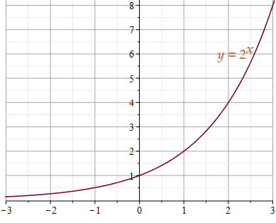
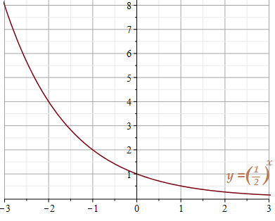
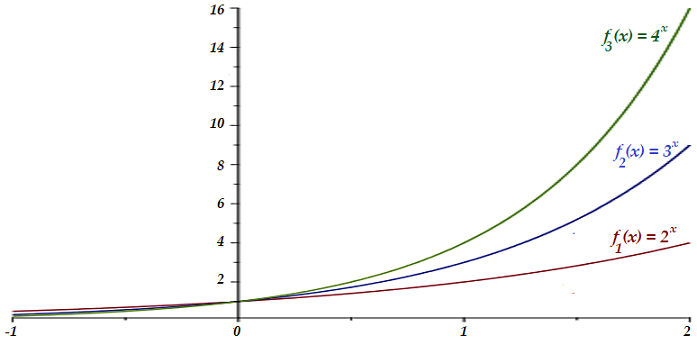
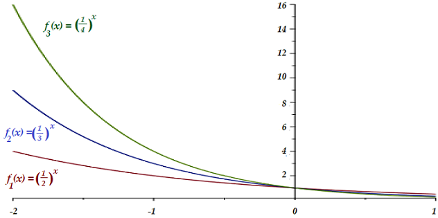
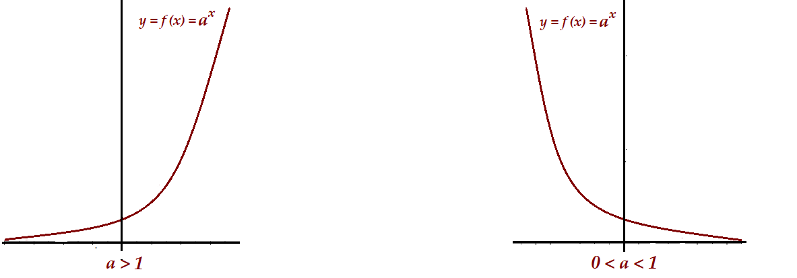
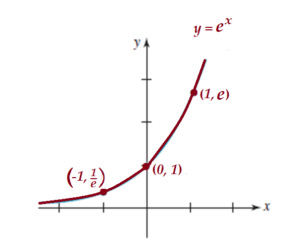

Auditoría e Ingeniería en Control de Gestión
Contador Público y Auditor
Logo Instituto
La función \(f: \mathbb{R} \longrightarrow \mathbb{R}\) definida por \(f(x) = a^x\), donde \(a>0\) y \(a\neq 1\), es llamada función exponencial de base \(a\).
Analizar la gráfica de las funciones \(f_1(x) = 2^x\) y de \(f_2(x) = \left (\dfrac{1}{2} \right )^x\)


Suponga que se invierten $100.000 a una tasa del 6% compuesto anualmente. ¿Cuánto se tendrá después de 3 años?
\(S(t) = 100.000 (1+ 0,06)^t\) donde \(t\) es el tiempo en años.
Para \(t=3\) entonces \(S(3) = 100.000 (1,06)^3 \approx 119101,6000\)
Respuesta: Después de 3 años tendrá $ 119.102
Si los mismos $100.000 se invierten por 3 años a una tasa del 6% anual, compuesto mensualmente. ¿Cuánto se tendrá después del periodo?
\(S(t) = 100.000 (1+ \frac{0,06}{12})^{12 t}\) donde \(t\) es el tiempo en años.
Para \(t=3\) entonces \(S(3) = 100.000 (1,005)^{12\cdot 3} \approx 119668,0525\)
Respuesta: Después de 3 años tendrá $ 119.668
Para trabajar con las funciones exponenciales, es bueno recordar algunas propiedades de los exponentes
Sean \(a\) y \(b\) números reales con \(a, b >0\)
\(f(x) = 1^x\) No es una función exponencial
\(f(x) = 0^x\) No es una función exponencial
\(f(x) = a^{-x}\) con \(a>0\), \(a\neq 1\) Es una función exponencial, ya que \(f(x) = \left (\frac{1}{a} \right )^{x}\)
Graficar las siguientes funciones en un mismo eje de coordenadas
\(f_1(x) = 2^x , \qquad f_2(x) = 3^x, \qquad f_3(x) = 4^x\)

Graficar las siguientes funciones en un mismo eje de coordenadas
\(f_1(x) = \left (\dfrac{1}{2} \right )^x , \qquad f_2(x) = \left ( \dfrac{1}{3}\right )^x, \qquad f_3(x) = \left (\dfrac{1}{4} \right )^x\)

En general los gráficos de funciones exponenciales \(f(x)=a^x\) son de 2 tipos dependiendo del valor de la base \(a\)

Resolver las siguientes ecuaciones
Sea \(f(x) = 2^{x+1}\). Determinar:
La imagen de 5
\(f(5) = 2^{5+1} = 2^6 = 64\)
La preimagen de 512
\(2^{x+1} = 512 = 2^9 \quad \Longrightarrow \qquad x+1 = 9 \quad \Longrightarrow \qquad x=8\)
Luego, la preimagen de 512 es 8.
Una de las bases más usadas es el número irracional \(e = 2,71828...\), (Nombre otorgado en honor al matemático suizo Leonardo Euler (1707 -1783))
La definición usual del número \(e\) es el número al cual tiende la cantidad \(\left (1+\frac{1}{n} \right )^n\) cuando \(n\) crece sin límite en dirección positiva, esto es,
\[\left (1+\frac{1}{n} \right )^n \approx 2,71828... \approx e \quad \text{cuando} \quad n\approx +\infty\]
La función exponencial natural es la función exponencial \[f(x)=e^x\] Con base \(e\). Es frecuente llamarla simplemente la función exponencial.

Ciertas inversiones, como las cuentas de ahorro, pagan una tasa anual de interés que se puede componer en forma anual, trimestral, mensual, semanal, a diario, etcétera.
\[S(t) = P \left ( 1+ \frac{r}{n} \right )^{nt}\]
\(S\) es el llamado valor futuro del capital \(P\). Si la cantidad \(n\) aumenta sin límite, entonces se dice que el interés es compuesto continuamente. Para calcular el valor futuro de \(P\) en este caso escribimos \(n=mr\) y notamos que \[\left ( 1+\frac{r}{n} \right )^{nt} = \left ( 1+\frac{1}{m} \right )^{m r t} = \left [ \left ( 1+\frac{1}{m} \right )^{m} \right ]^{rt}\]
Si \(n\) es muy “grande”, es decir cerca del infinito, entonces \(m\) también “grande” y como \(\left(1+\dfrac{1}{m}\right)^m \approx e\) cuando \(m \approx +\infty\). Luego la ecuación se transforma en
\[P \left [ \left ( 1+\frac{1}{m} \right )^{m} \right ]^{rt} \approx P\, e^{rt} \qquad \text{cuando } m \approx +\infty\]
Así, si se compone continuamente una tasa de interés anual \(r\), el valor futuro \(S\) de un capital \(P\) en \(t\) años es \[S(t) = P e^{rt}\]
Suponga que se invierten $100.000 a una tasa anual del 6%. Comparar el valor futuro de esta inversión dentro de 3 años
Si el interés se compone semanalmente.
Si el interés se compone continuamente
La función exponencial de base \(e\) surge naturalmente en el estudio de crecimiento y decrecimiento de poblaciones. Supongamos que \(P_0\) es el número de individuos presentes en una población en un tiempo \(t = 0\) y \(\lambda\) es un número real fijo, el modelo
\[P(t) = P_0 e^{\lambda t}\]
nos indica el número de individuos que tiene la población en un tiempo \(t\).
Note que si \(\lambda>0\) la función \(P\) es creciente y por lo tanto estamos frente a un modelo de crecimiento poblacional.
Si \(\lambda < 0\) la situación se invierte y tenemos un modelo de decrecimiento de población.
Se puede probar que \(\lambda\) es una buena aproximación del porcentaje de crecimiento o de decrecimiento expresado en decimales.
La población de una ciudad de 5.000 habitantes crece a razón de 3% anual.
Determinar una ecuación que proporcione la población después de \(t\) años a partir de ahora.
Determinar la población 9 años después de ahora. Obtenga la respuesta al entero más cercano
\(P(t) = 5.000 e^{0,03 t}\)
\(P(9) = 5.000
e^{0,03 \cdot 9} = 5.000 e^{27} \approx 6549,822255...\)
Respuesta: La población después de 9 años
será de 6550 habitantes.
A causa de una recesión económica, la población de cierta área urbana disminuye a razón de 1% anual. Al inicio la población era de 100.000 habitantes. ¿Cuál es la población después de 3 años?
Si la población disminuye, entonces \(P(t) = 100.000e^{-0,01t}\)
Para \(t=3\), se tiene \(P(3) = 100.000 e^{-0,01 \cdot 3} = 100.000 e^{-0,03} \approx 97044,55335...\)
Respuesta: Después de 3 años habrá 97.045 habitantes.
¿En cuántos años la población será aproximadamente de 94.000 habitantes?
Debemos resolver la siguiente ecuación \(P(t)=100000e^{-0,01t}=94000\). Para ello, necesitamos determinar la función inversa de \(e^x\).